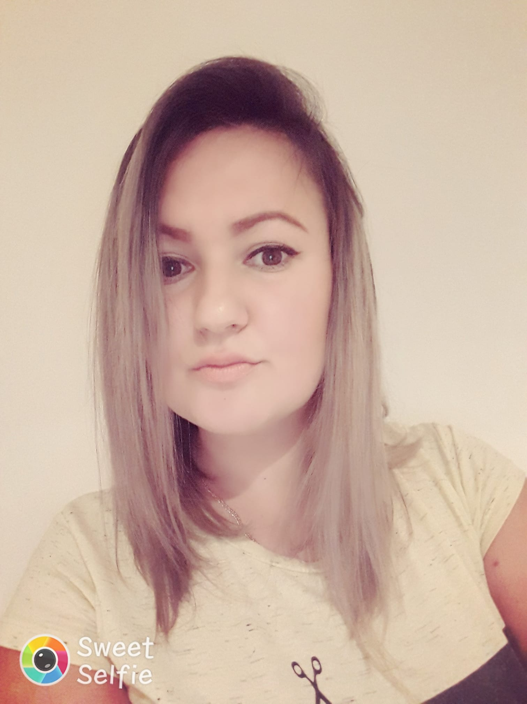
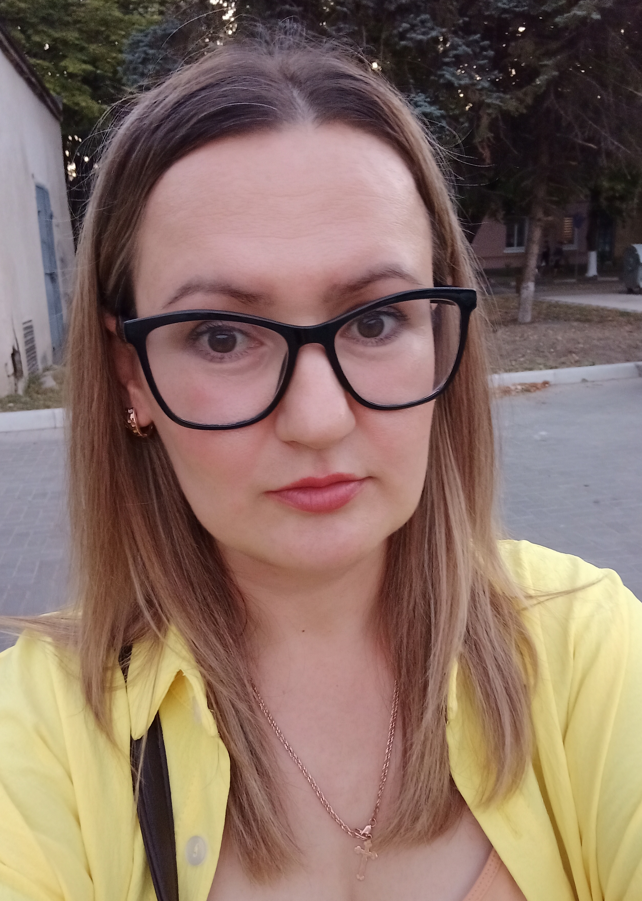
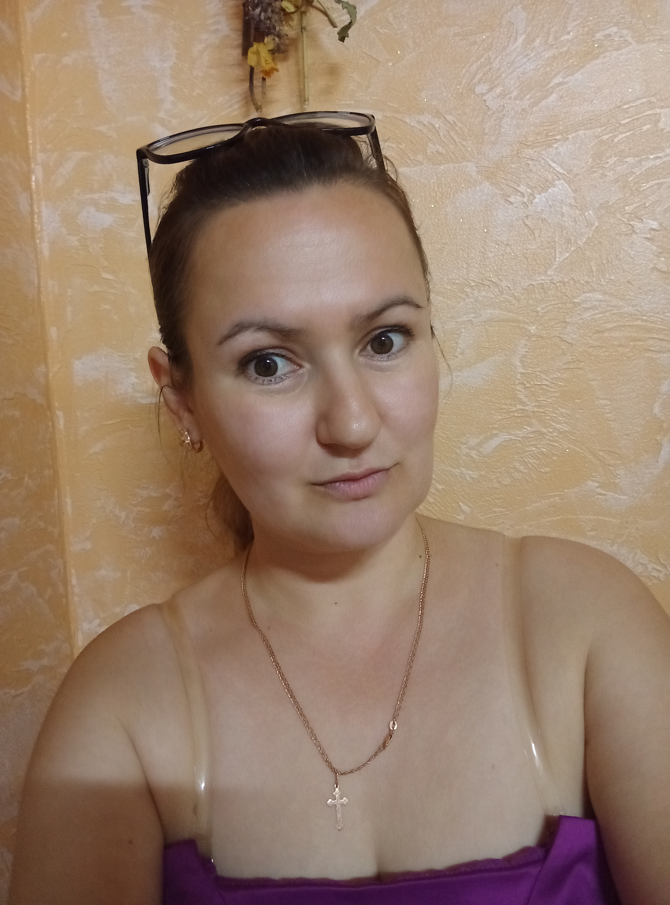

Cristina Tofan
|
Profesor de Limba Engleză
Română, Rusă, Engleză, Franceză cernei.cristina89@gmail.com +373 78 039 439 |
Sunt o profesoară tânără de limba engleză din Republica Moldova. Sunt pasionată de muzică, dans, cinematografie. Îmi place să compun poezii, versuri pentru cântece. Sunt comunicabilă, îmi place foarte mult să citesc cărți. Sunt o persoană pozitivă, cu viziuni frumoase și cu arta de a influența pozitiv oamenii din jur. Sunt persoana care vede pozitivul în orice, o persoană care luptă pentru a fi lider în viață. |
|  |  |

|
 |
Experiența de lucru
Profesor de limba engleză
Septembrie 2021-PrezentProfesor de limba engleză în Gimnaziul Cetireni.
Consilier local
PrezentConsilier local în primăria din satul Cetireni.
Educație
Studii de Masterat
Octombrie 2012-Iulie 2014Studii de Masterat în Terminologii/Traduceri
Studii de Licență
Septembrie 2008-Iunie 2012Studii de Licență în Filologie